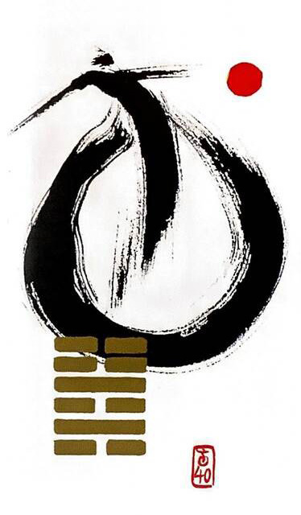

뇌수해
소길 8
(대한독립만세, 화살표모양,이사,이동)
험준함에서 벗어나니 기쁨이 있다있던 자리에서 벗어나고 인고의 시간을 거쳐 자유롭게날아가는 상황을 표현한 그림
해결하다.해소된다.풀린다. 풀어지고 느슨해짐.구조.해방.안도.구조됨.방해물로부터 벗어남
연애운
출장.여행.이사.이동으로 장거리커플.주말부부가 됨 현실적 타협.해결해 할 일이 있음
사업운
막혔던 일이 슬슬 풀림.사업.사건.인간관계 풀림. 문제를 해결하고 과감한 정리가 필요함.이동수.발령.출장.이직
속마음
썸행동적이고 활달한 마음.기대와 희망적인 마음
1년 이상답답한 기운이 해결되는 마음.편안하고 느슨해진 마음
이별 후현실적으로 타협하고 해결하고 싶은 마음
솔로연애운
새로운 이성 생길 확률 높다
건강운
오랜 지병은 좋아진다.치료해야 하는 병이 있으면 서둘러 해결해야 한다.건강검진.과음.신장병.위장병 주의